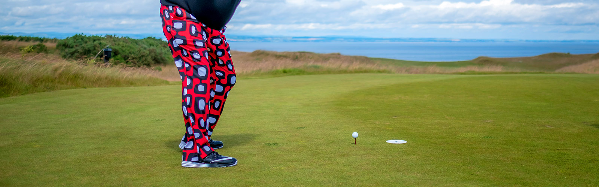

La Team Pitch & Play à été créée en 2016 et regroupe des joueurs au parcours différents, évoluant sur le PGA Tour Champions, l’European Tour, le Staysure Tour ainsi que Ladies European Tour.
John Daly
Le fantasque John Daly entra dans le circuit pro en 1987. Et c’est en 1991
qu’il fait sa première forte impression lorsqu’il emporte la victoire de l’US PGA
Championship. À la suite de cette victoire, il devient un acteur majeur
du golf, surnommé « Long John » à cause de sa distance de drive sur le tee.
Il marque une nouvelle fois les esprits avec sa 3ème place lors du Masters,
en Géorgie, et c’est en 1995 qu’il revient sur le devant de la scène en remportant
l’Open britannique. En 2004, John Daly remporte le Buick Invitation
al Open, ce qui lui permit d’obtenir le titre de PGA TOUR Comeback Player of
the Year.
Et c’est en 2016 qu’il rejoint le circuit du PGA Tour Champions. Connu pour
être un personnage excentrique, John Daly est cependant un homme altruiste
qui apporte son soutient à de nombreuses œuvres de bienfaisance, telles que « Make
a Wish » ou « Girls Club of America » et à beaucoup d’autres associations dans le
Nord Arkansas.
En 2017 il fait son retour et remporte l’Insperity Invitational sur le PGA
Tour Champions ! Il termine également deuxième du Paris Legends Championship juste
derrière Paul Brodhurst, en septembre.
Barry Lane
Barry Lane devient professionnel en 1976, et c’est en 1982 qu’il fit son
entrée au sein du Tour Européen. Les premières saisons furent un peu dures pour
lui, et c’est véritablement à partir de 1986 qu’il s’impose sur le circuit.
Entre 1988 et 1994, il remporte 4 tournois sur l’European Tour, il est également
le représentant à plusieurs reprises de l’Angleterre durant la Coupe du Monde et
la Dunhill Cup.
C’est en 2010 qu’il rejoint European Senior Tour et gagne sa première victoire quelque
mois après lors du Cleveland Golf/Srixon Scottish Senior Open.
Il comptabilise pour le moment 5 victoires sur l’European Senior Tour, dont l’édition
2016 du MCB Championship, finale de l’European Senior Tour à l’Ile
Maurice. C’est fin aout 2017 qu’il remporte sa dernière victoire sur l’European Senior
Tour lors du Willow Senior Golf Classic.
Roger Sabarros
Roger Sabarros, joueur français, est professionnel depuis 1981. Il s’imposa en remportant à deux reprises l’European Challenge tour, à chaque fois sur le sol français. Sa première victoire fut en 1989 lors de l’Open de Lyon puis en 1991 à Biarritz lors du trophée Bulles Laurent Perrier. Il fit son entrée sur l’European Senior Tour en 2012, ou il enregistre sa meilleure performance en 2013 en terminant 13ème du French Riviera Masters.
Michael Lorenzo-Vera
Mike Lorenzo-Vera est un joueur français, né à Biarritz. Il passe professionnel en 2005, et connait un début de carrière difficile. Il évolue de 2006 à 2008 sur le Challenge Tour, et gagne sa carte du Tour Européen en finissant 1er de l’ordre du mérite. Une montée ponctuée par quelques belles prestations mais qui ne suffiront pas pour garder sa place. Il revient en force en 2016, gagne de nouveau sa carte et est aujourd’hui les 2e meilleur français du Tour. En 2017, il termine 3e de HNA Open de France, gagne sa place pour son premier majeur la même année, à The Open, ou il passe le cut. Il comptera aussi deux tops 10, qui lui permettront de terminer 30e de la Race to Dubai. En 2018, MLV offre une nouvelle année incroyable avec une deuxième place au Rocco Forte Sicilian Open et une troisième place à l’Omega European Masters. Il participe aussi à son second majeur au 100th PGA Championship.
Meghan MacLaren
Meghan MacLaren est une jeune joueuse anglaise prometteuse. Agée de seulement
22 ans, elle vient de faire son entrée sur le Ladies European Tour, après
un an passé sur le circuit amateur plus que respectable.
En 2016, elle gagne notamment le Santander Golf Tour LETAS La Peñaza sur
le LET Access Series, et remporte également une médaille d’or pour l’Angleterre
lors des Championnats d’Europe en équipe. En 2017 elle s’affirme réellement sur
le LET ! Elle termine 3ème lors du US Women Open Selectional qualifier Europe.
6ème lors de l’Andalucia Aosta Del Sol Open Et plus récemment elle s’incère
dans le top 10 Hero Women’s India Open ou elle termine 9ème.
Sophie Powell
Sophie Powell est une jeune joueuse prometteuse du Ladies European Tour Access, elle est passée professionnelle en 2015 et participe depuis à de nombreux tournois.
Kelsey MacDonald
Kelsey MacDonald est un jeune joueuse talentueuse venue d’Ecosse, née en 1990. Elle passe professionnelle en 2013 et exerce aujourd’hui son jeu sur le Ladies European Tour Access. En 2017, elle se qualifie pour l’US Open féminin.
Mathieu Decottignies Lafon
Mathieu Decottignies-Lafon, jeune joueur prometteur évoluant aujourd’hui sur le Challenge Tour. Ce dernier gagne sa carte sur le circuit en finissant troisième à l’ordre du mérite du Pro Golf Tour en 2018, avec deux victoires : Haugschlag NO Open et Polish Open (en 10 trous de play-off, record historique). Il se fait connaitre du grand public lors de l’Open de France 2016 ou il termine 16e de l’épreuve et premier français. Il s’entraine aujourd’hui avec Benoit Ducolombier et continue son ascension vers l’European Tour.
